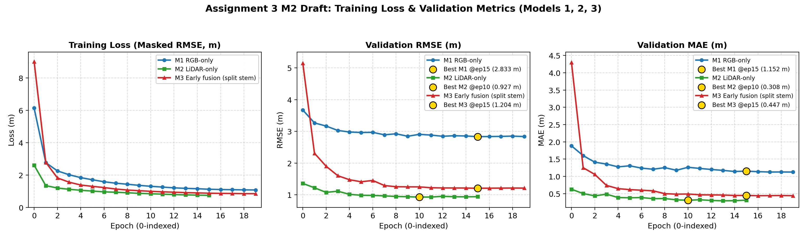

Assignment 3 · Group RTX5090
Multimodal Deep Learning: Depth Completion on KITTI
Instructor: Dr. Le Thanh Sach
Members: Dang Thanh Phu · Cao Duc Thanh
Status: Progress Report / Draft
Data pipeline, exploratory data analysis, unimodal baselines (RGB-only, LiDAR-only),
and simple early fusion (split-stem) with preliminary validation/test metrics are complete.
Contents
Problem statement
Multimodal depth completion on KITTI: given an RGB image (dense texture, no metric scale) and a projected sparse LiDAR depth map (metric scale, ~4.4% pixel coverage), predict a dense depth map in [0, 80] m at 352×1216. Loss and metrics are evaluated only on pixels with ground truth (GT > 0).
Dataset description and EDA
- Dataset & Modalities: KITTI Depth Completion + raw RGB (
image_02): RGB (3 ch, ImageNet-normalized), sparse LiDAR (2 ch:depth / 80and validity mask), semi-dense GT depth (16-bit PNG / 256, in metres). - Splits (drive-level, 0 overlap): 8,237 train (43 drives, 17.1% GT density), 1,023 validation (15 held-out drives, 14.0% GT density), 1,000 test (
val_selection_cropped, 13 drives, 17.1% GT density); all pairs complete (0 missing modalities). - Depth Distribution & Quality: 0–20 m dominates (81.0% train, 82.1% val, 78.8% test), 12.3–15.8% in 20–40 m, 4.8–5.6% in 40–80 m, and 0.01–0.03% > 80 m. Proposal check on 300 pairs/split showed ~1–2% LiDAR–GT differences > 1 m (edge bleeding).
- Preprocessing: Bottom-center cropped to 352×1216; no data augmentation applied in this M2 draft.
Methodology
- Pipeline: Raw paired data → preprocessing (crop 352×1216, normalize) → data loader → ResNet-34 encoder(s) / stem fusion → U-Net decoder → masked RMSE loss → AdamW → depth [0, 80] m → evaluation.
- Shared Encoder & Decoder: ImageNet-pretrained ResNet-34 encoder (
torchvision; non-RGB conv1 channels initialized from the mean RGB filter) + self-implemented U-Net decoder migrated from A2 with asigmoid × 80head. - M1 RGB-only: 3-channel pretrained RGB stem + ResNet-34 + U-Net decoder — 24.45M parameters.
- M2 LiDAR-only: 2-channel LiDAR stem (mean RGB init) + ResNet-34 + U-Net decoder — 24.45M parameters.
- M3 Early Fusion (Split Stem): Separate RGB (3→64 + BN) and LiDAR (2→64 + BN) stems summed before ReLU and shared ResNet-34 body (separate BNs keep sparse LiDAR from being drowned out by dense RGB) — 24.46M parameters.
- Loss & Optimizer: Masked RMSE on
GT > 0; AdamW (decoderlr = 2e-4, encoderlr = 2e-5, weight decay1e-4), cosine LR over 20 epochs.
Experimental setup
- Hardware / Environment: Python 3.12, PyTorch 2.11+cu130; M1 and M3 trained on Colab A100 (
batch_size = 40), M2 trained locally on RTX 5070 Ti (batch_size = 8). - Hyperparameters: Up to 20 epochs, AMP (
fp16),seed = 666, early stopping (patience = 5on validation RMSE). - Evaluation: Pixel-weighted RMSE (primary) and MAE (secondary) across all valid GT pixels and depth bands (0–20, 20–40, 40–80 m);
best.ptselected by lowest validation RMSE.
Results
| Model | Params | Epochs (Best) | Train Loss (m) | Val RMSE (m) | Val MAE (m) | Test RMSE / MAE (m) |
|---|---|---|---|---|---|---|
| M1 RGB-only | 24.45M | 20 (15) | 1.123 | 2.833 | 1.152 | Pending |
| M2 LiDAR-only | 24.45M | 16 (10) | 0.845 | 0.927 | 0.308 | 1.982 / 0.494 |
| M3 Early fusion (split stem) | 24.46M | 20 (15) | 0.879 | 1.204 | 0.447 | Pending |
Training and validation curves:

Comparison and discussion
On validation, M2 LiDAR-only (0.927 m RMSE) beats M1 RGB-only (2.833 m, −67.3% RMSE) because sparse LiDAR provides direct metric scale whereas RGB alone is scale-ambiguous.
M3 Early fusion strongly improves over RGB-only (−57.5% RMSE, 1.204 m vs. 2.833 m) and outperforms a single 5-channel stem run (2.044 m), showing that separate stem BatchNorms preserve sparse LiDAR features.
However, M3 still trails M2 (+29.9% RMSE), likely due to 5× fewer gradient steps per epoch (batch 40 vs. 8) and partial overfitting to RGB textures. On the official test set (val_selection_cropped), M2 reaches 1.982 m RMSE / 0.494 m MAE across both cameras and unseen test drives.
Error analysis
Validation error increases sharply with depth across all three models (0–20 / 20–40 / 40–80 m RMSE): M1 rises from 1.066 → 4.572 → 8.960 m, M2 from 0.426 → 1.424 → 2.854 m, and M3 from 0.568 → 1.845 → 3.676 m. Primary error sources are extreme LiDAR sparsity beyond 40 m (only ~4.8–5.6% of GT pixels), lack of RGB metric scale on distant/textureless regions, and ~1–2% LiDAR–GT edge-bleeding conflicts. Detailed qualitative support/conflict cases and error taxonomy will be added in M3.
Limitations and conclusion
Limitations: unequal batch size (40 for M1/M3 vs. 8 for M2), single seed (666), no data augmentation, and M1/M3 test numbers pending. Current conclusion: metric LiDAR dominates RGB at this training budget, and modality-specific stem normalization is crucial for early fusion. Plan for M3: matched batch size across all models, Model 4 (PENet-style confidence fusion), fusion and LiDAR-sparsity ablations (E1, E2), support/conflict qualitative analysis, and compute cost (FPS, FLOPs, VRAM).
References
- A. Geiger, P. Lenz, R. Urtasun. Are we ready for autonomous driving? The KITTI vision benchmark suite. CVPR 2012.
- J. Uhrig et al. Sparsity Invariant CNNs. 3DV 2017. cvlibs.net
- K. He et al. Deep Residual Learning for Image Recognition. CVPR 2016.
- O. Ronneberger, P. Fischer, T. Brox. U-Net: Convolutional Networks for Biomedical Image Segmentation. MICCAI 2015.
- torchvision
resnet34: pytorch.org/vision
AI usage disclosure
Gemini 4 Hydrogen was used for requirements/proposal review, Colab setup, encoder/M2/M4 implementation guidance, evaluation script, training curves plot, README, and M2 audit. Claude (Opus 5.5) was used for M2 requirements checking, Model 3 fusion discussion, log summary statistics, and drafting the M2 page. All numbers and outputs were verified by the members against source logs.
Links
M3 report
M3 report will be available upon completion.
Presentation
YouTube presentation: required for M3 Final (02 Dec 2026), not for this draft.